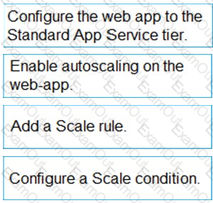

Microsoft - AZ-204
Data throughout must be maximized. Latency must be minimized.
You need to implement the Azure Event Hub.
Which settings should you use? To answer, select the appropriate options in the answer area.
NOTE: Each correct selection is worth one point.
Answer:
206 of 272

Microsoft - AZ-204
Explanation
Box 1: 6
The number of partitions is specified at creation and must be between 2 and 32.
There are 6 highways.
Box 2: Highway
References:
https://docs.microsoft.com/en-us/azure/event-hubs/event-hubs-features
Question #:87 - (Exam Topic 3)
You are developing an ASP.NET Core web application. You plan to deploy the application to Azure Web App
for Containers.
The application needs to store runtime diagnostic data that must be persisted across application restarts. You
have the following code:
207 of 272

Microsoft - AZ-204
You need to configure the application settings so that diagnostic data is stored as required.
How should you configure the web app’s settings? To answer, select the appropriate options in the answer
area.
NOTE: Each correct selection is worth one point.
Answer:
Explanation
208 of 272

Microsoft - AZ-204
Box 1: If WEBSITES_ENABLE_APP_SERVICE_STORAGE
If WEBSITES_ENABLE_APP_SERVICE_STORAGE setting is unspecified or set to true, the /home/
directory will be shared across scale instances, and files written will persist across restarts
Box 2: /home
Reference:
https://docs.microsoft.com/en-us/azure/app-service/containers/app-service-linux-faq
Question #:88 - (Exam Topic 3)
You develop software solutions for a mobile delivery service. You are developing a mobile app that users can
use to order from a restaurant in their area. The app uses the following workflow:
1. A driver selects the restaurants for which they will deliver orders.
2. Orders are sent to all available drivers in an area.
3. Only orders for the selected restaurants will appear for the driver.
4. The first driver to accept an order removes it from the list of available orders.
You need to implement an Azure Service Bus solution.
Which three actions should you perform in sequence? To answer, move the appropriate actions from the list of
actions to the answer area and arrange them in the correct order.
209 of 272

Microsoft - AZ-204
Answer:
Explanation
C:\Users\wk\Desktop\mudassar\Untitled.jpg
Box 1: Create a single Service Bus Namespace
To begin using Service Bus messaging entities in Azure, you must first create a namespace with a name that is
unique across Azure. A namespace provides a scoping container for addressing Service Bus resources within
your application.
210 of 272

Microsoft - AZ-204
Box 2: Create a Service Bus Topic for each restaurant for which a driver can receive messages.
Create topics.
Box 3: Create a Service Bus subscription for each restaurant for which a driver can receive orders.
Topics can have multiple, independent subscriptions.
References:
https://docs.microsoft.com/en-us/azure/service-bus-messaging/service-bus-messaging-overview
Question #:89 - (Exam Topic 3)
You are developing an application that uses Azure Blob storage.
The application must read the transaction logs of all the changes that occur to the blobs and the blob metadata
in the storage account for auditing purposes. The changes must be in the order in which they occurred, include
only create, update, delete, and copy operations and be retained for compliance reasons.
You need to process the transaction logs asynchronously.
What should you do?
A. Process all Azure Blob storage events by using Azure Event Grid with a subscriber Azure Function app.
B. Enable the change feed on the storage account and process all changes for available events.
C. Process all Azure Storage Analytics logs for successful blob events.
D. Use the Azure Monitor HTTP Data Collector API and scan the request body for successful blob events.
Answer: B
Explanation
Change feed support in Azure Blob Storage
The purpose of the change feed is to provide transaction logs of all the changes that occur to the blobs and the
blob metadata in your storage account. The change feed provides ordered, guaranteed, durable, immutable,
read-only log of these changes. Client applications can read these logs at any time, either in streaming or in
batch mode. The change feed enables you to build efficient and scalable solutions that process change events
that occur in your Blob Storage account at a low cost.
Reference:
https://docs.microsoft.com/en-us/azure/storage/blobs/storage-blob-change-feed
Question #:90 - (Exam Topic 3)
211 of 272

Microsoft - AZ-204
You are developing a mobile instant messaging app for a company.
The mobile app must meet the following requirements:
• Support offline data sync.
• Update the latest messages during normal sync cycles.
You need to implement Offline Data Sync.
Which two actions should you perform? Each conn I answer presents part of the solution.
NOTE: Each correct selection is worth one point.
A. Retrieve records from Offline Data Sync on every call to the PullAsync method.
B. Retrieve records from Offline Data Sync using an Incremental Sync.
C. Push records to Offline Data Sync using an Incremental Sync.
D. Return the updatedAt column from the Mobile Service Backend and implement sorting by using the
column.
E. Return the updatedAt column from the Mobile Service Backend and implement sorting by the message
id.
Answer: B E
Explanation
B: Incremental Sync: the first parameter to the pull operation is a query name that is used only on the client. If
you use a non-null query name, the Azure Mobile SDK performs an incremental sync. Each time a pull
operation returns a set of results, the latest updatedAt timestamp from that result set is stored in the SDK local
system tables. Subsequent pull operations retrieve only records after that timestamp.
E (not D): To use incremental sync, your server must return meaningful updatedAt values and must also
support sorting by this field. However, since the SDK adds its own sort on the updatedAt field, you cannot use
a pull query that has its own orderBy clause.
References:
https://docs.microsoft.com/en-us/azure/app-service-mobile/app-service-mobile-offline-data-sync
Question #:91 - (Exam Topic 3)
You are creating a hazard notification system that has a single signaling server which triggers audio and visual
alarms to start and stop.
You implement Azure Service Bus to publish alarms. Each alarm controller uses Azure Service Bus to receive
212 of 272

Microsoft - AZ-204
alarm signals as part of a transaction. Alarm events must be recorded for audit purposes. Each transaction
record must include information about the alarm type that was activated.
You need to implement a reply trail auditing solution.
Which two actions should you perform? Each correct answer presents part of the solution.
NOTE: Each correct selection is worth one point.
A. Assign the value of the hazard message SessionID property to the SequenceNumber property.
B. Assign the value of the hazard message SequenceNumber property to the DeliveryCount property. C.
Assign the value of the hazard message MessageId property to the DeliveryCount property.
C. Assign the value of the hazard message SessionID property to the ReplyToSessionld property.
D. Assign the value of the hazard message MessageId property to the SequenceNumber property.
E. Assign the value of the hazard message Messageld property to the CorrelationId property.
Answer: A B
Question #:92 - (Exam Topic 3)
You are developing an ASP.NET Core Web API web service that uses Azure Application Insights to monitor
performance and track events.
You need to enable logging and ensure that log messages can be correlated to events tracked by Application
Insights.
How should you complete the code? To answer, drag the appropriate code segments to the correct locations.
Each code segment may be used once, more than once, or not at all. You may need to drag the split bar
between panes or scroll to view content.
NOTE: Each correct selection is worth one point.
213 of 272

Microsoft - AZ-204
Answer:
Explanation
214 of 272

Microsoft - AZ-204
Box 1: ApplicationInsightsLoggerOptions
If you want to include the EventId and EventName properties, then add the following to the ConfigureServices
method:
services
AddOptions<ApplicationInsightsLoggerOptions>()
Configure(o => o.IncludeEventId = true);
Box 2: IncludeEventID
Box 3: ApplicationServices
In Asp.Net core apps it turns out that trace logs do not show up in Application Insights out of the box. We
need to add the following code snippet to our Configure method in Startup.cs:
loggerFactory.AddApplicationInsights(app.ApplicationServices, logLevel);
References:
https://blog.computedcloud.com/enabling-application-insights-trace-logging-in-asp-net-core/
Question #:93 - (Exam Topic 3)
Note: This question is part of a series of questions that present the same scenario. Each question in the
series contains a unique solution. Determine whether the solution meets the stated goals.
215 of 272


Microsoft - AZ-204
You are developing and deploying several ASP.NET web applications to Azure App Service. You plan to save
session state information and HTML output.
You must use a storage mechanism with the following requirements:
Share session state across all ASP.NET web applications.
Support controlled, concurrent access to the same session state data for multiple readers and a single
writer.
Save full HTTP responses for concurrent requests.
You need to store the information.
Solution: Enable Application Request Routing (ARR).
Does the solution meet the goal?
A. Yes
B. No
Answer: B
Explanation
Instead deploy and configure Azure Cache for Redis. Update the web applications.
Reference:
https://docs.microsoft.com/en-us/azure/architecture/best-practices/caching#managing-concurrency-in-a-cache
Question #:94 - (Exam Topic 3)
You develop a web app that uses tier D1 app service plan by using the Web Apps feature of Microsoft Azure
App Service.
Spikes in traffic have caused increases in page load times.
You need to ensure that the web app automatically scales when CPU load is about 85 percent and minimize
costs.
Which four actions should you perform in sequence? To answer, move the appropriate actions from the list of
actions to the answer area and arrange them in the correct order.
NOTE: More than one order of answer choices is correct. You will receive credit for any of the correct orders
you select.
216 of 272

Microsoft - AZ-204
Answer:
217 of 272


Microsoft - AZ-204
Explanation
Step 1: Configure the web app to the Standard App Service Tier
218 of 272

Microsoft - AZ-204
The Standard tier supports auto-scaling, and we should minimize the cost.
Step 2: Enable autoscaling on the web app
First enable autoscale
Step 3: Add a scale rule
Step 4: Add a Scale condition
Reference:
https://docs.microsoft.com/en-us/azure/monitoring-and-diagnostics/monitoring-autoscale-get-started
Question #:95 - (Exam Topic 3)
Note: This question is part of a series of questions that present the same scenario. Each question in the series
contains a unique solution. Determine whether the solution meets the stated goals.
You are developing and deploying several ASP.Net web applications to Azure App Service. You plan to save
session state information and HTML output. You must use a storage mechanism with the following
requirements:
•Share session state across all ASP.NET web applications
•Support controlled, concurrent access to the same session state data for multiple readers and a single writer
•Save full HTTP responses for concurrent requests
You need to store the information.
Proposed Solution: Deploy and configure Azure Cache for Redis. Update the web applications.
.
Does the solution meet the goal?
A. Yes
B. No
Answer: A
Explanation
The session state provider for Azure Cache for Redis enables you to share session information between
different instances of an ASP.NET web application.
The same connection can be used by multiple concurrent threads.
219 of 272

Microsoft - AZ-204
Redis supports both read and write operations.
The output cache provider for Azure Cache for Redis enables you to save the HTTP responses generated by an
ASP.NET web application.
Note: Using the Azure portal, you can also configure the eviction policy of the cache, and control access to the
cache by adding users to the roles provided. These roles, which define the operations that members can
perform, include Owner, Contributor, and Reader. For example, members of the Owner role have complete
control over the cache (including security) and its contents, members of the Contributor role can read and
write information in the cache, and members of the Reader role can only retrieve data from the cache.
Reference:
https://docs.microsoft.com/en-us/azure/architecture/best-practices/caching
Question #:96 - (Exam Topic 3)
You are preparing to deploy an application to an Azure Kubernetes Service (AKS) cluster.
The application must only be available from within the VNet that includes the cluster.
You need to deploy the application.
How should you complete the deployment YAML? To answer, drag the appropriate YAML segments to the
correct locations. Each YAML segment may be used once, more than once, or not at all. You may need to drag
the split bar between panes or scroll to view content.
NOTE: Each correct selection is worth one point.
220 of 272

Microsoft - AZ-204
Answer:
Explanation
221 of 272

Microsoft - AZ-204
To create an internal load balancer, create a service manifest named internal-lb.yaml with the service type
LoadBalancer and the azure-load-balancer-internal annotation as shown in the following example:
YAML:
apiVersion: v1
kind: Service
metadata:
name: internal-app
annotations:
service.beta.kubernetes.io/azure-load-balancer-internal: "true"
spec:
type: LoadBalancer
ports:
- port: 80
selector:
app: internal-app
222 of 272

Microsoft - AZ-204
References:
https://docs.microsoft.com/en-us/azure/aks/internal-lb
Question #:97 - (Exam Topic 3)
A company uses Azure SQL Database to store data for an app. The data includes sensitive information.
You need to implement measures that allow only members of the managers group to see sensitive information.
Which two actions should you perform? Each correct answer presents part of the solution.
NOTE: Each correct selection is worth one point.
A. Option A
B. Option B
C. Option C
D. Option D
E. Option E
Answer: B E
Explanation
Dynamic data masking helps prevent unauthorized access to sensitive data by enabling customers to designate
how much of the sensitive data to reveal with minimal impact on the application layer.
SQL users excluded from masking - A set of SQL users or AAD identities that get unmasked data in the SQL
query results.
Note: The New-AzureRmSqlDatabaseDataMaskingRule cmdlet creates a data masking rule for an Azure SQL
223 of 272

Microsoft - AZ-204
database.
References:
https://docs.microsoft.com/en-us/powershell/module/azurerm.sql/new-azurermsqldatabasedatamaskingrule?view=azurermps-6.13.0
Question #:98 - (Exam Topic 3)
You are developing a software solution for an autonomous transportation system. The solution uses large data
sets and Azure Batch processing to simulate navigation sets for entire fleets of vehicles.
You need to create compute nodes for the solution on Azure Batch.
What should you do?
A. In the Azure portal, create a Batch account.
B. In a .NET method, call the method: BatchClient.PoolOperations.CreatePool
C. In Python, implement the class: JobAddParameter
D. In Python, implement the class: TaskAddParameter
Answer: B
Explanation
A Batch job is a logical grouping of one or more tasks. A job includes settings common to the tasks, such as
priority and the pool to run tasks on. The app uses the BatchClient.JobOperations.CreateJob method to create a
job on your pool.
Question #:99 - (Exam Topic 3)
You are building a website to access project data related to terms within your organization. The website does
not allow anonymous access. Authentication performed using an Azure Active Directory (Azure AD) app
named internal.
The website has the following authentication requirements:
•Azure AD users must be able to login to the website.
•Personalization of the website must be based on membership in Active Directory groups.
You need to configure the application’s manifest to meet the authentication requirements.
How should you configure the manifest? To answer, select the appropriate options in the answer area.
NOTE: Each correct selection is worth one point.
224 of 272

Microsoft - AZ-204
Answer:
225 of 272

Microsoft - AZ-204
Explanation
226 of 272

Microsoft - AZ-204
Box 1: groupMembershipClaims
Scenario: Personalization of the website must be based on membership in Active Directory groups.
Group claims can also be configured in the Optional Claims section of the Application Manifest.
Enable group membership claims by changing the groupMembershipClaim
The valid values are:
"All"
"SecurityGroup"
"DistributionList"
"DirectoryRole"
Box 2: oauth2Permissions
Scenario: Azure AD users must be able to login to the website.
227 of 272


Microsoft - AZ-204
oauth2Permissions specifies the collection of OAuth 2.0 permission scopes that the web API (resource) app
exposes to client apps. These permission scopes may be granted to client apps during consent.
Question #:100 - (Exam Topic 3)
A company develops a series of mobile games. All games use a single leaderboard service.
You have the following requirements:
•Code should be scalable and allow for growth.
•Each record must consist of a playedId, gameId, score, and time played.
•When users reach a new high score, the system will save the new score using the SaveScore function below.
•Each game is assigned and Id based on the series title.
You have the following code. (Line numbers are included for reference only.)
You store customer information in an Azure Cosmos database. The following data already exists in the
database:
For each of the following statements, select Yes if the statement is true. Otherwise, select No.
NOTE: Each correct selection is worth one point.
228 of 272

Microsoft - AZ-204
Answer:
Explanation
Box 1: Yes
Code for CosmosDB, example:
// Parse the connection string and return a reference to the storage account.
CloudStorageAccount storageAccount = CloudStorageAccount.Parse(
CloudConfigurationManager.GetSetting("StorageConnectionString"));
229 of 272

Microsoft - AZ-204
// Create the table client.
CloudTableClient tableClient = storageAccount.CreateCloudTableClient();
// Retrieve a reference to the table.
CloudTable table = tableClient.GetTableReference("people");
// Create the TableOperation object that inserts the customer entity.
TableOperation insertOperation = TableOperation.Insert(customer1);
Box 2: No
A new record will always be added as TableOperation.Insert is used, instead of
TableOperation.InsertOrReplace.
Box 3: No
No partition key is used.
Box 4: Yes
References:
https://docs.microsoft.com/en-us/azure/cosmos-db/table-storage-how-to-use-dotnet
Question #:101 - (Exam Topic 3)
You are developing an internal website for employees to view sensitive data. The website uses Azure Active
Directory (AAD) for authentication. You need to implement multifactor authentication for the website.
What should you do? Each correct answer presents part of the solution.
NOTE; Each correct selection is worth one point.
A. In Azure AD, create a new conditional access policy.
B. In Azure AD, enable application proxy.
C. Configure the website to use Azure AD B2C.
D. In Azure AD conditional access, enable the baseline policy.
E. Upgrade to Azure AD Premium.
Answer: A E
Explanation
230 of 272

Microsoft - AZ-204
References:
https://docs.microsoft.com/en-us/azure/active-directory/authentication/howto-mfa-getstarted
Question #:102 - (Exam Topic 3)
Note: This question is part of a series of questions that present the same scenario. Each question in the
series contains a unique solution that might meet the stated goals. Some question sets might have more
than one correct solution, while others might not have a correct solution.
After you answer a question in this section, you will NOT be able to return to it. As a result, these
questions will not appear in the review screen.
You develop and deploy an Azure App Service API app to a Windows-hosted deployment slot named
Development. You create additional deployment slots named Testing and Production. You enable auto swap
on the Production deployment slot.
You need to ensure that scripts run and resources are available before a swap operation occurs.
Solution: Enable auto swap for the Testing slot. Deploy the app to the Testing slot.
Does the solution meet the goal?
A. Yes
B. No
Answer: B
Explanation
Instead update the web.config file to include the applicationInitialization configuration element. Specify
custom initialization actions to run the scripts.
Note: Some apps might require custom warm-up actions before the swap. The applicationInitialization
configuration element in web.config lets you specify custom initialization actions. The swap operation waits
for this custom warm-up to finish before swapping with the target slot. Here's a sample web.config fragment.
<system.webServer>
<applicationInitialization>
<add initializationPage="/" hostName="[app hostname]" />
<add initializationPage="/Home/About" hostName="[app hostname]" />
</applicationInitialization>
</system.webServer>
Reference:
231 of 272

Microsoft - AZ-204
https://docs.microsoft.com/en-us/azure/app-service/deploy-staging-slots#troubleshoot-swaps
Question #:103 - (Exam Topic 3)
You are working for Contoso, Ltd.
You define an API Policy object by using the following XML markup:
For each of the following statements, select Yes if the statement is true. Otherwise, select No.
NOTE: Each correct selection is worth one point.
Answer:
232 of 272

Microsoft - AZ-204
Explanation
Box 1: Yes
Use the set-backend-service policy to redirect an incoming request to a different backend than the one
specified in the API settings for that operation. Syntax: <set-backend-service base-url="base URL of the
backend service" />
Box 2: No
The condition is on 512k, not on 256k.
Box 3: No
The set-backend-service policy changes the backend service base URL of the incoming request to the one
specified in the policy.
Reference:
https://docs.microsoft.com/en-us/azure/api-management/api-management-transformation-policies
Question #:104 - (Exam Topic 3)
233 of 272

Microsoft - AZ-204
Note: This question is part of a series of questions that present the same scenario. Each question in the series
contains a unique solution that might meet the stated goals. Some question sets might have more than one
correct solution, while others might not have a correct solution.
After you answer a question in this section, you will NOT be able to return to it. As a result, these questions
will not appear in the review screen.
You develop a software as a service (SaaS) offering to manage photographs. Users upload photos to a web
service which then stores the photos in Azure Storage Blob storage. The storage account type is
General-purpose V2.
When photos are uploaded, they must be processed to produce and save a mobile-friendly version of the
image. The process to produce a mobile-friendly version of the image must start in less than one minute.
You need to design the process that starts the photo processing.
Solution: Move photo processing to an Azure Function triggered from the blob upload.
Does the solution meet the goal?
A. Yes
B. No
Answer: A
Explanation
Azure Storage events allow applications to react to events. Common Blob storage event scenarios include
image or video processing, search indexing, or any file-oriented workflow.
Events are pushed using Azure Event Grid to subscribers such as Azure Functions, Azure Logic Apps, or even
to your own http listener.
Note: Only storage accounts of kind StorageV2 (general purpose v2) and BlobStorage support event
integration. Storage (general purpose v1) does not support integration with Event Grid.
Reference:
https://docs.microsoft.com/en-us/azure/storage/blobs/storage-blob-event-overview
Question #:105 - (Exam Topic 3)
You are developing a .NET Core MVC application for customers to research hotels. The application will use
Azure Search. The application will search the index by using various criteria to locate documents related to
hotels. The index will include search fields for rate, a list of amenities, and distance to the nearest airport.
The application must support the following scenarios for specifying search criteria and organizing results:
234 of 272

Microsoft - AZ-204
• Search the index by using regular expressions.
• Organize results by counts for name-value pairs.
• List hotels within a specified distance to an airport and that fall within a specific price range.
You need to configure the SearchParameters class.
Which properties should you configure? To answer, select the appropriate options in the answer area.
NOTE Each correct selection is worth one point.
Answer:
Explanation
235 of 272

Microsoft - AZ-204
Box 1: QueryType
The SearchParameters.QueryType Property gets or sets a value that specifies the syntax of the search query.
The default is 'simple'. Use 'full' if your query uses the Lucene query syntax.
You can write queries against Azure Search based on the rich Lucene Query Parser syntax for specialized
query forms: wildcard, fuzzy search, proximity search, regular expressions are a few examples.
Box 2: Facets
The facets property gets or sets the list of facet expressions to apply to the search query. Each facet expression
contains a field name, optionally followed by a comma-separated list of name:value pairs.
Box 3: Filter
The Filter property gets or sets the OData $filter expression to apply to the search query.
References:
https://docs.microsoft.com/en-us/dotnet/api/microsoft.azure.search.models.searchparameters
https://docs.microsoft.com/en-us/azure/search/query-lucene-syntax
https://docs.microsoft.com/en-us/dotnet/api/microsoft.azure.search.models.searchparameters.querytype
Question #:106 - (Exam Topic 3)
You use Azure Table storage to store customer information for an application. The data contains customer
details and is partitioned by last name. You need to create a query that returns all customers with the last name
Smith. Which code segment should you use?
236 of 272

Microsoft - AZ-204
A. TableQuery.GenerateFilterCondition("PartitionKey", Equals, "Smith")
B. TableQuery.GenerateFilterCondition("LastName", Equals, "Smith")
C. TableQuery.GenerateFilterCondition("PartitionKey", QueryComparisons.Equal, "Smith")
D. TableQuery.GenerateFilterCondition("LastName", QueryComparisons.Equal, "Smith")
Answer: C
Explanation
Retrieve all entities in a partition. The following code example specifies a filter for entities where 'Smith' is the
partition key. This example prints the fields of each entity in the query results to the console.
Construct the query operation for all customer entities where PartitionKey="Smith".
TableQuery<CustomerEntity> query = new
TableQuery<CustomerEntity>().Where(TableQuery.GenerateFilterCondition("PartitionKey",
QueryComparisons.Equal, "Smith"));
References:
https://docs.microsoft.com/en-us/azure/cosmos-db/table-storage-how-to-use-dotnet
Question #:107 - (Exam Topic 3)
You
are developing an Azure App Service hosted ASP.NET Core web app to deliver video on-demand streaming
media. You enable an Azure Content Delivery Network (CDN) Standard for the web endpoint. Customer
videos are downloaded from the web app by using the following example URL.:
http://www.contoso.com/content.mp4?quality=1
All media content must expire from the cache after one hour. Customer videos with varying quality must be
delivered to the closest regional point of presence (POP) node.
You need to configure Azure CDN caching rules.
Which options should you use? To answer, select the appropriate options in the answer area.
NOTE: Each correct selection is worth one point.
237 of 272

Microsoft - AZ-204
Answer:
238 of 272

Microsoft - AZ-204
Explanation
239 of 272

Microsoft - AZ-204
Box 1: Override
Override: Ignore origin-provided cache duration; use the provided cache duration instead. This will not
override cache-control: no-cache.
Set if missing: Honor origin-provided cache-directive headers, if they exist; otherwise, use the provided cache
duration.
Incorrect:
Bypass cache: Do not cache and ignore origin-provided cache-directive headers.
Box 2: 1 hour
All media content must expire from the cache after one hour.
Box 3: Cache every unique URL
Cache every unique URL: In this mode, each request with a unique URL, including the query string, is treated
as a unique asset with its own cache. For example, the response from the origin server for a request for
example.ashx?q=test1 is cached at the POP node and returned for subsequent caches with the same query
string. A request for example.ashx?q=test2 is cached as a separate asset with its own time-to-live setting.
240 of 272

Microsoft - AZ-204
Reference:
https://docs.microsoft.com/en-us/azure/cdn/cdn-query-string
Question #:108 - (Exam Topic 3)
You develop an Azure web app. You monitor performance of the web app by using Application Insights. You
need to ensure the cost for Application Insights does not exceed a preset budget. What should you do?
A. Implement ingestion sampling using the Azure portal.
B. Set a daily cap for the Application Insights instance.
C. Implement adaptive sampling using the Azure portal.
D. Implement adaptive sampling using the Application Insights SDK.
E. Implement ingestion sampling using the Application Insights SDK.
Answer: D
Explanation
Sampling is an effective way to reduce charges and stay within your monthly quota.
You can set sampling manually, either in the portal on the Usage and estimated costs page; or in the ASP.NET
SDK in the .config file; or in the Java SDK in the ApplicationInsights.xml file, to also reduce the network
traffic.
Adaptive sampling is the default for the ASP.NET SDK. Adaptive sampling automatically adjusts to the
volume of telemetry that your app sends. It operates automatically in the SDK in your web app so that
telemetry traffic on the network is reduced.
References:
https://docs.microsoft.com/en-us/azure/azure-monitor/app/sampling
Question #:109 - (Exam Topic 3)
A company runs an international travel and bookings management service. The company plans to begin
offering restaurant bookings. You must develop a solution that uses Azure Search and meets the following
requirements:
• Users must be able to search for restaurants by name, description, location, and cuisine.
• Users must be able to narrow the results further by location, cuisine, rating, and family-friendliness.
• All words in descriptions must be included in searches.
241 of 272

Microsoft - AZ-204
You need to add annotations to the restaurant class.
How should you complete the code segment? To answer, select the appropriate options in the answer area.
NOTE: Each correct selection is worth one point.
242 of 272

Microsoft - AZ-204
243 of 272

Microsoft - AZ-204
Answer:
244 of 272

Microsoft - AZ-204
Explanation
245 of 272

Microsoft - AZ-204
Box 1: [IsSearchable.IsFilterable.IsSortable,IsFacetable]
Location
Users must be able to search for restaurants by name, description, location, and cuisine.
Users must be able to narrow the results further by location, cuisine, rating, and family-friendliness.
Box 2: [IsSearchable.IsFilterable.IsSortable,Required]
Description
Users must be able to search for restaurants by name, description, location, and cuisine.
All words in descriptions must be included in searches.
Box 3: [IsFilterable,IsSortable,IsFaceTable]
Rating
Users must be able to narrow the results further by location, cuisine, rating, and family-friendliness.
Box 4: [IsSearchable.IsFilterable,IsFacetable]
Cuisines
246 of 272

Microsoft - AZ-204
Users must be able to search for restaurants by name, description, location, and cuisine.
Users must be able to narrow the results further by location, cuisine, rating, and family-friendliness.
Box 5: [IsFilterable,IsFacetable]
FamilyFriendly
Users must be able to narrow the results further by location, cuisine, rating, and family-friendliness.
References:
https://www.henkboelman.com/azure-search-the-basics/
Question #:110 - (Exam Topic 3)
You are developing a project management service by using ASP.NET. The service hosts conversations, files,
to-do lists, and a calendar that users can interact with at any time.
The application uses Azure Search for allowing users to search for keywords in the project data.
You need to implement code that creates the object which is used to create indexes in the Azure Search
service.
Which two objects should you use? Each correct answer presents part of the solution.
NOTE: Each correct selection is worth one point.
A. SearchService
B. SearchlndexCIient
C. SearchServiceClient
D. SearchCredentials
Answer: B C
Explanation
The various client libraries define classes like Index, Field, and Document, as well as operations like
Indexes.Create and Documents.Search on the SearchServiceClient and SearchIndexClient classes.
Example:
The sample application we'll be exploring creates a new index named "hotels", populates it with a few
documents, then executes some search queries. Here is the main program, showing the overall flow:
/ This sample shows how to delete, create, upload documents and query an index
247 of 272

Microsoft - AZ-204
static void Main(string[] args)
{
IConfigurationBuilder builder = new ConfigurationBuilder().AddJsonFile("appsettings.json");
IConfigurationRoot configuration = builder.Build();
SearchServiceClient serviceClient = CreateSearchServiceClient(configuration);
Console.WriteLine("{0}", "Deleting index...\n");
DeleteHotelsIndexIfExists(serviceClient);
Console.WriteLine("{0}", "Creating index...\n");
CreateHotelsIndex(serviceClient);
ISearchIndexClient indexClient = serviceClient.Indexes.GetClient("hotels");
References:
https://docs.microsoft.com/en-us/azure/search/search-howto-dotnet-sdk
Question #:111 - (Exam Topic 3)
You develop a solution that uses an Azure SQL Database to store user information for a mobile app.
The app stores sensitive information about users.
You need to hide sensitive information from developers that query the data for the mobile app.
Which three items must you identify when configuring dynamic data masking? Each correct answer presents a
part of the solution.
NOTE: Each correct selection is worth one point.
A. Column
B. Table
C. Trigger
D. Index
E. Schema
Answer: A B E
248 of 272

Microsoft - AZ-204
Explanation
In the Dynamic Data Masking configuration page, you may see some database columns that the
recommendations engine has flagged for masking. In order to accept the recommendations, just click Add
Mask for one or more columns and a mask is created based on the default type for this column. You can
change the masking function by clicking on the masking rule and editing the masking field format to a
different format of your choice.
References:
249 of 272

Microsoft - AZ-204
https://docs.microsoft.com/en-us/azure/sql-database/sql-database-dynamic-data-masking-get-started-portal
Question #:112 - (Exam Topic 3)
Your company is migrating applications to Azure. The IT department must allow internal developers to
communicate with Microsoft support.
The service agents of the IT department must only have view resources and create support ticket permissions
to all subscriptions. A new custom role must be created by reusing a default role definition and changing the
permissions.
You need to create the custom role.
To answer, select the appropriate options in the answer area.
NOTE: Each correct selection is worth one point.
Answer:
250 of 272


Microsoft - AZ-204
Explanation
Box 1: Set-AzureRmRoleDefinition Input-File C:\SupportRole.json
The Set-AzureRmRoleDefinition cmdlet updates an existing custom role in Azure Role-Based Access Control.
Provide the updated role definition as an input to the command as a JSON file or a PSRoleDefinition object.
The role definition for the updated custom role MUST contain the Id and all other required properties of the
role even if they are not updated: DisplayName, Description, Actions, AssignableScope
Box 2: "*/read*."* Microsoft.Support/*"
Microsoft.Support/* Create and manage support tickets
"Microsoft.Support" role definition azure
Question #:113 - (Exam Topic 3)
You provide an Azure API Management managed web service lo clients. The back end web service
implements HTTP Strict Transport Security (HSTS).
Every request to the backend service must include a valid HTTP authorization header.
You need to configure the Azure API Management instance with an authentication policy.
Which two policies can you uses? Each correct answer presents a complete solution
NOTE: Each correct selection is worth one point.
A. Certificate Authentication
B. Basic Authentication
C. OAuth Client Credential Grant
251 of 272


Microsoft - AZ-204
D. Digest Authentication
Answer: A C
Question #:114 - (Exam Topic 3)
You are developing Azure WebJobs.
You need to recommend a WebJob type for each scenario.
Which WebJob type should you recommend? To answer, drag the appropriate WebJob types to the correct
scenarios. Each WebJob type may be used once, more than once, or not at all. You may need to drag the split
bar between panes or scroll to view content.
NOTE: Each correct selection is worth one point.
Answer:
252 of 272

Microsoft - AZ-204
Explanation
Box 1: Continuous
Continuous runs on all instances that the web app runs on. You can optionally restrict the WebJob to a single
instance.
Box 2: Triggered
Triggered runs on a single instance that Azure selects for load balancing.
Box 3: Continuous
Continuous supports remote debugging.
Note:
The following table describes the differences between continuous and triggered WebJobs.
References:
https://docs.microsoft.com/en-us/azure/app-service/web-sites-create-web-jobs
253 of 272

Microsoft - AZ-204
Question #:115 - (Exam Topic 3)
ASP.NET Core API app by using C#. The API app will allow users to authenticate by using Twitter and Azure
Active Directory (Azure AD).
Users must be authenticated before calling API methods. You must log the user’s name for each method call.
You need to configure the API method calls.
Which values should you use? To answer, select the appropriate options in the answer area.
NOTE: Each correct selection is worth one point.
Answer:
254 of 272

Microsoft - AZ-204
Explanation
+ Explanation:
Box 1: Authorize
Box 2: X-MS-CLIENT-PRINCIPAL-NAME
App Service passes user claims to your application by using special headers. External requests aren't allowed
to set these headers, so they are present only if set by App Service. Some example headers include:
X-MS-CLIENT-PRINCIPAL-NAME
X-MS-CLIENT-PRINCIPAL-ID
Here's the set of headers you get from Easy Auth for a Twitter authenticated user:
{
"cookie": "AppServiceAuthSession=Lx43...xHDTA==",
"x-ms-client-principal-name": "evilSnobu",
"x-ms-client-principal-id": "35....",
"x-ms-client-principal-idp": "twitter",
"x-ms-token-twitter-access-token": "35...Dj",
"x-ms-token-twitter-access-token-secret": "OK3...Jx",
}
255 of 272

Microsoft - AZ-204
References:
https://docs.microsoft.com/en-us/azure/app-service/app-service-authentication-how-to
Question #:116 - (Exam Topic 3)
Note: This question is part of a series of questions that present the same scenario. Each question in the
series contains a unique solution that might meet the stated goals. Some question sets might have more
than one correct solution, while others might not have a correct solution.
After you answer a question in this section, you will NOT be able to return to it. As a result, these
questions will not appear in the review screen.
You are developing an Azure solution to collect point-of-sale (POS) device data from 2,000 stores located
throughout the world. A single device can produce 2 megabytes (MB) of data every 24 hours. Each store
location has one to five devices that send data.
You must store the device data in Azure Blob storage. Device data must be correlated based on a device
identifier. Additional stores are expected to open in the future.
You need to implement a solution to receive the device data.
Solution: Provision an Azure Event Grid. Configure event filtering to evaluate the device identifier.
Does the solution meet the goal?
A. Yes
B. No
Answer: B
Explanation
Instead use an Azure Service Bus, which is used order processing and financial transactions.
Note: An event is a lightweight notification of a condition or a state change. Event hubs is usually used
reacting to status changes.
Reference:
https://docs.microsoft.com/en-us/azure/event-grid/compare-messaging-services
Question #:117 - (Exam Topic 3)
You develop an ASP.NET Core MVC application. You configure the application to track webpages and
custom events.
256 of 272

Microsoft - AZ-204
You need to identify trends in application usage.
Which Azure Application Insights Usage Analysis features should you use? To answer, drag the appropriate
features to the correct requirements. Each feature may be used once, more than once, or not at all. You may
need to drag the split bar between panes or scroll to view content.
NOTE: Each correct selection is worth one point.
Answer:
Explanation
Box1: Users
Box 2: Impact
One way to think of Impact is as the ultimate tool for settling arguments with someone on your team about
how slowness in some aspect of your site is affecting whether users stick around. While users may tolerate a
certain amount of slowness, Impact gives you insight into how best to balance optimization and performance
to maximize user conversion.
Box 3: Retention
The retention feature in Azure Application Insights helps you analyze how many users return to your app, and
how often they perform particular tasks or achieve goals. For example, if you run a game site, you could
compare the numbers of users who return to the site after losing a game with the number who return after
winning. This knowledge can help you improve both your user experience and your business strategy.
Box 4: User flows
The User Flows tool visualizes how users navigate between the pages and features of your site. It's great for
answering questions like:
How do users navigate away from a page on your site?
257 of 272

Microsoft - AZ-204
What do users click on a page on your site?
Where are the places that users churn most from your site?
Are there places where users repeat the same action over and over?
Question #:118 - (Exam Topic 3)
You are developing an application that use an Azure blob named data to store application data. The application
creates blob snapshots to allow application state to be reverted to an earlier state. The Azure storage account
has soft deleted enabled.
The system performs the following operations in order:
•The blob is updated
•Snapshot 1 is created.
•Snapshot 2 is created.
•Snapshot 1 is deleted.
A system error then deletes the data blob and all snapshots.
You need to determine which application states can be restored.
What is the restorability of the application data? To answer, select the appropriate options in the answer area.
NOTE: Each correct selection is worth one point.
258 of 272

Microsoft - AZ-204
Answer:
Explanation
Box 1: Can be restored
When enabled, soft delete enables you to save and recover your data when blobs or blob snapshots are deleted.
This protection extends to blob data that is erased as the result of an overwrite.
Box 2: Cannot be restored
It has been deleted.
259 of 272

Microsoft - AZ-204
Box 3: Can be restored
It has not been deleted.
References:
https://docs.microsoft.com/en-us/azure/storage/blobs/storage-blob-soft-delete
Question #:119 - (Exam Topic 3)
A company backs up all manufacturing data to Azure Blob Storage. Admins move blobs from hot storage to
archive tier storage every month.
You must automatically move blocks to Archive tier after they have not been accessed for 180 days. The path
for any item that is not archived must be placed in an existing queue. This operation must be performed
automatically once a month. You set the value of TierAgeInDays to 180.
How should you configure the Logic App? To answer, drag the appropriate triggers or action blocks to the
correct trigger or action slots. Each trigger or action block may be used once, more than once, or not at all.
You may need to drag the split bar between panes or scroll to view content.
NOTE: Each correct selection is worth one point.
260 of 272


Microsoft - AZ-204
261 of 272

Microsoft - AZ-204
Answer:
262 of 272


Microsoft - AZ-204
263 of 272


Microsoft - AZ-204
Explanation
264 of 272

Microsoft - AZ-204
265 of 272

Microsoft - AZ-204
Box 1: Recurrence
Box 2: Insert Entity
Box 3 (if true): Tier Blob
Box 4: (if false):
Leave blank.
References:
https://docs.microsoft.com/en-us/azure/logic-apps/logic-apps-perform-data-operations
Question #:120 - (Exam Topic 3)
Note: This question is part of a series of questions that present the same scenario. Each question in the series
contains a unique solution that might meet the stated goals. Some question sets might have more than one
correct solution, while others might not have a correct solution.
After you answer a question in this question, you will NOT be able to return to it. As a result, these questions
266 of 272

Microsoft - AZ-204
will not appear in the review screen.
You are developing a website that will run as an Azure Web App. Users will authenticate by using their Azure
Active Directory (Azure AD) credentials.
You plan to assign users one of the following permission levels for the website: admin, normal, and reader. A
user’s Azure AD group membership must be used to determine the permission level. You need to configure
authorization.
Solution:
•Create a new Azure AD application’s manifest, set value of the groupMembershipClaims option to All.
•In the website, use the value of the groups claim from the JWI for the user to determine permissions.
Does the solution meet the goal?
A. Yes
B. No
Answer: A
Explanation
To configure Manifest to include Group Claims in Auth Token
1. Go to Azure Active Directory to configure the Manifest. Click on Azure Active Directory, and go to App
registrations to find your application:
2. Click on your application (or search for it if you have a lot of apps) and edit the Manifest by clicking on it.
3. Locate the “groupMembershipClaims” setting. Set its value to either “SecurityGroup” or “All”. To help you
decide which:
“SecurityGroup” - groups claim will contain the identifiers of all security groups of which the user is a
member.
“All” - groups claim will contain the identifiers of all security groups and all distribution lists of which the
user is a member
Now your application will include group claims in your manifest and you can use this fact in your code.
References:
https://blogs.msdn.microsoft.com/waws/2017/03/13/azure-app-service-authentication-aad-groups/
Question #:121 - (Exam Topic 3)
Note: This question is part of a series of questions that present the same scenario. Each question in the
267 of 272

Microsoft - AZ-204
series contains a unique solution that might meet the stated goals. Some question sets might have more
than one correct solution, while others might not have a correct solution.
After you answer a question in this section, you will NOT be able to return to it. As a result, these
questions will not appear in the review screen.
You are developing an Azure solution to collect point-of-sale (POS) device data from 2,000 stores located
throughout the world. A single device can produce 2 megabytes (MB) of data every 24 hours. Each store
location has one to five devices that send data.
You must store the device data in Azure Blob storage. Device data must be correlated based on a device
identifier. Additional stores are expected to open in the future.
You need to implement a solution to receive the device data.
Solution: Provision an Azure Notification Hub. Register all devices with the hub.
Does the solution meet the goal?
A. Yes
B. No
Answer: B
Explanation
Instead use an Azure Service Bus, which is used order processing and financial transactions.
Reference:
https://docs.microsoft.com/en-us/azure/event-grid/compare-messaging-services
Question #:122 - (Exam Topic 3)
Note: This question is part of a series of questions that present the same scenario. Each question in the
series contains a unique solution that might meet the stated goals. Some question sets might have more
than one correct solution, while others might not have a correct solution.
After you answer a question in this section, you will NOT be able to return to it. As a result, these
questions will not appear in the review screen.
You develop Azure solutions.
You must grant a virtual machine (VM) access to specific resource groups in Azure Resource Manager.
You need to obtain an Azure Resource Manager access token.
Solution: Use an X.509 certificate to authenticate the VM with Azure Resource Manager.
268 of 272

Microsoft - AZ-204
Does the solution meet the goal?
A. Yes
B. No
Answer: B
Explanation
Instead run the Invoke-RestMethod cmdlet to make a request to the local managed identity for Azure resources
endpoint.
Reference:
https://docs.microsoft.com/en-us/azure/active-directory/managed-identities-azure-resources/tutorial-windows-vm-access-arm
Question #:123 - (Exam Topic 3)
Note: This question is part of a series of questions that present the same scenario. Each question in the series
contains a unique solution that might meet the stated goals. Some question sets might have more than one
correct solution, while others might not have a correct solution.
After you answer a question in this question, you will NOT be able to return to it. As a result, these questions
will not appear in the review screen.
You are developing a website that will run as an Azure Web App. Users will authenticate by using their Azure
Active Directory (Azure AD) credentials.
You plan to assign users one of the following permission levels for the website: admin, normal, and reader. A
user’s Azure AD group membership must be used to determine the permission level. You need to configure
authorization.
Solution: Configure the Azure Web App for the website to allow only authenticated requests and require
Azure AD log on.
Does the solution meet the goal?
A. Yes
B. No
Answer: B
Explanation
Instead in the Azure AD application’s manifest, set value of the groupMembershipClaims option to All.
References:
269 of 272

Microsoft - AZ-204
https://blogs.msdn.microsoft.com/waws/2017/03/13/azure-app-service-authentication-aad-groups/
Question #:124 - (Exam Topic 3)
You are developing a solution for a hospital to support the following use cases:
•The most recent patient status details must be retrieved even if multiple users in different locations have
updated the patient record.
•Patient health monitoring data retrieved must be the current version or the prior version.
•After a patient is discharged and all charges have been assessed, the patient billing record contains the final
charges.
You provision a Cosmos DB NoSQL database and set the default consistency level for the database account to
Strong. You set the value for Indexing Mode to Consistent.
You need to minimize latency and any impact to the availability of the solution. You must override the default
consistency level at the query level to meet the required consistency guarantees for the scenarios.
Which consistency levels should you implement? To answer, drag the appropriate consistency levels to the
correct requirements. Each consistency level may be used once, more than once, or not at all. You may need to
drag the split bar between panes or scroll to view content.
NOTE: Each correct selection is worth one point.
Answer:
270 of 272

Microsoft - AZ-204
Explanation
Box 1: Strong
Strong: Strong consistency offers a linearizability guarantee. The reads are guaranteed to return the most
recent committed version of an item. A client never sees an uncommitted or partial write. Users are always
guaranteed to read the latest committed write.
Box 2: Bounded staleness
Bounded staleness: The reads are guaranteed to honor the consistent-prefix guarantee. The reads might lag
behind writes by at most "K" versions (that is "updates") of an item or by "t" time interval. When you choose
bounded staleness, the "staleness" can be configured in two ways:
The number of versions (K) of the item
The time interval (t) by which the reads might lag behind the writes
Box 3: Eventual
Eventual: There's no ordering guarantee for reads. In the absence of any further writes, the replicas eventually
converge.
Question #:125 - (Exam Topic 3)
You are developing a software solution for an autonomous transportation system. The solution uses large data
271 of 272

Microsoft - AZ-204
sets and Azure Batch processing to simulate navigation sets for entire fleets of vehicles.
You need to create compute nodes for the solution on Azure Batch.
What should you do?
A. In Python, implement the class: TaskAddParameter
B. In Python, implement the class: JobAddParameter
C. In the Azure portal, create a Batch account
D. In a .NET method, call the method: BatchClient.PoolOperations.CreateJob
Answer: D
Explanation
A Batch job is a logical grouping of one or more tasks. A job includes settings common to the tasks, such as
priority and the pool to run tasks on. The app uses the BatchClient.JobOperations.CreateJob method to create a
job on your pool.
Note:
Step 1: Create a pool of compute nodes. When you create a pool, you specify the number of compute nodes for
the pool, their size, and the operating system. When each task in your job runs, it's assigned to execute on one
of the nodes in your pool.
Step 2 : Create a job. A job manages a collection of tasks. You associate each job to a specific pool where that
job's tasks will run.
Step 3: Add tasks to the job. Each task runs the application or script that you uploaded to process the data files
it downloads from your Storage account. As each task completes, it can upload its output to Azure Storage.
272 of 272